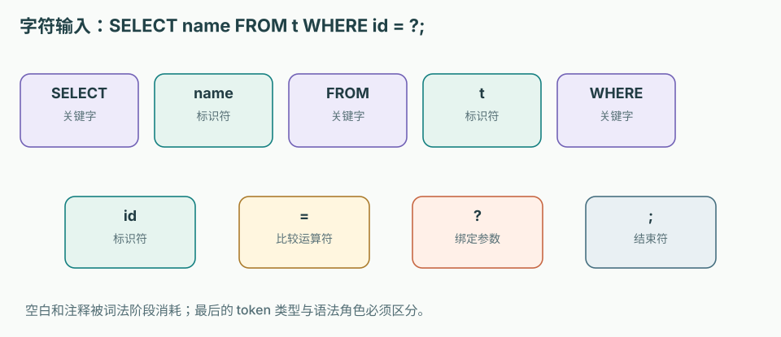
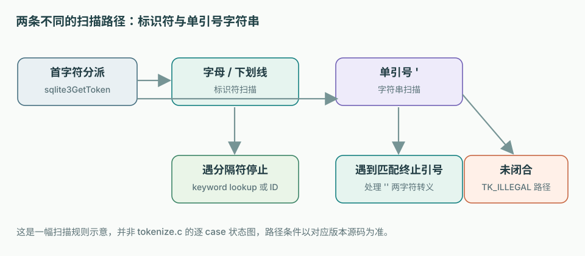
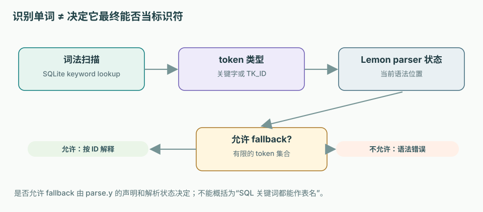

SQLite 词法分析：字符如何变成可解释的 Token
读懂 SQL 的第一步不是查关键字表，而是分清字符扫描、Token 分类、注释与引用处理，再判断哪些词能进入 Lemon 的当前语法状态。
1. 为什么字符串中的 SELECT 不是 SQL 关键字？
考虑 SELECT 'SELECT' AS phrase, "from" FROM "table";。同一组字母可能代表语法关键字、字符串内容、带双引号的标识符。Tokenizer 不能“每碰到 SELECT 五个字母就输出关键字”；它必须先理解当前字符属于哪个词法片段，再分类该片段的 token 类型。

SQLite 官方架构说明将 tokenizer 视为 hand-coded 的 src/tokenize.c，它将 token 逐个交给 parser。每次识别所消费的字节长度与token 类别是不同的输出。它不是直接构造用户表或执行 SELECT，也不是把 SQL 全部转换为字符数组然后排序。来源：官方架构
2. 在 tokenize.c 中寻找最小扫描单位
源码阅读起点是 sqlite3GetToken() 与 sqlite3RunParser()。前者围绕当前输入的首字节判断 token 边界及类别；后者维护解析的循环与上下文，并驱动 Lemon 解析器。当前 SQLite 版本的循环、特殊 token 和错误分支可能比课堂上最小状态机复杂，因此不应把下面的伪代码声称为真实函数签名。
// 教学伪代码，不是 sqlite3GetToken() 的真实函数声明
while (has_input) {
TokenInfo tk = scan_one_token(bytes + offset);
if (tk.type == WHITESPACE_OR_COMMENT) {
offset += tk.length_in_bytes;
continue;
}
if (tk.type == ILLEGAL) { report_token_error(offset); break; }
lemon_parser_push(tk.type, tk.span);
offset += tk.length_in_bytes;
}
// 真正的 tokenizer/parser 还需要补完语句尾、字节编码与错误清理token 长度按 UTF-8 字节计算时，不能把 Python 字符串长度或 Unicode 码点数直接替代源码中的 byte offset。例如 name 为 4 个 ASCII 字节；中文标识符可能跨越多个 UTF-8 字节。SQL 的空白/注释边界和非法字节序列需要单独处理。

3. 识别关键字、标识符、字面量和参数
| 输入示例 | 词法角色 | 语义边界 |
|---|---|---|
SELECT、WHERE | SQL 关键字 | 语法位置由 parser 解释 |
users、user_id | 未加引号标识符候选 | 可能通过关键词判定 |
"where" | 双引号标识符 | 不是 SQL 字符串的首选语法 |
'a''b' | 字符串字面量 | 值是 a'b |
42、3.14 | 数值字面量 | 负号通常单独作为一元运算符参与表达式 |
?、?1、:name | 绑定参数 | 编译期间登记槽位，执行前绑定值 |
-- comment、/* note */ | 注释 | 当成分隔与空白，不直接构成 AST 节点 |
SQLite 同时存在历史兼容性的引用规则；不要依赖双引号字符串的可选兼容行为。始终优先单引号表示字符串、双引号表示标识符，并使用参数化接口传递数据值而不是自行拼接引号。
4. 为什么关键词不是“永远不能作为列名”？
在 tokenizer 识别出某个关键字后，Lemon parser 仍需要在当前状态下判断该 token 是否满足语法。SQLite 有专门的 fallback 机制：只有列入允许回退的 token，且当前解析状态下需要标识符时，才能按相应回退规则解释。不是所有关键字都可以自由回退为 ID，也不意味着词法分析阶段预先把关键字重新分成普通字符串。

源码定位：先查 tokenize.c 中关键词识别入口与相关生成表，再看 parse.y 中 %fallback 声明。这一设计解释了为何某些非保留词能在标识符位置使用，而 SELECT 等关键字在很多位置仍必须加引号。官方 Lemon 说明对 fallback 有明确描述。
5. 错误究竟发生在 tokenizer 还是 parser？
“无法解析”可以来自两个不同问题。词法层不认识输入构造，例如未闭合的单引号字符串，会使扫描无法形成合法 token；语法层则可能接收到全部合法 token，但这些 token 不组成 SQL 语句，例如 SELECT FROM t 中 SELECT 后缺少投影表达式。
源码调试中建议先观察 sqlite3_prepare_v2() 的返回码及 sqlite3_error_offset()，然后判断错误是 token 边界、parser state 还是名称解析。需要特别注意：sqlite3_error_offset() 的值是 UTF-8 字节位置，-1 表示没有对应 token，不能凭它推断一定是哪一类错误。
6. 可重复实验：注释、引号、参数与不完整语句
下面的 SQL 保证不依赖外部数据库文件，适合用 sqlite3 CLI 或 Python 内置 SQLite 绑定验证。
-- examples/08_lexical.sql
SELECT 'a''b' AS quoted_string;
SELECT 1 /* skipped inside SQL */ + 2 AS result;
SELECT "select" FROM (SELECT 7 AS "select");
SELECT typeof(3.14) AS numeric_type;
-- 下行是故意不完整的输入，交由单独的错误测试：
-- SELECT 'unterminated;公开 API sqlite3_complete() 可以帮助判断一段 SQL 文本是否构成以分号结束的完整语句；它并不替代 prepare 的完整语法检查。下列 C 程序演示这种差别：sqlite3_complete("SELECT FROM t;") 可以判定语句结束，但 sqlite3_prepare_v2() 仍会因语法不合法而失败。
#include <assert.h>
#include <sqlite3.h>
int main(void) {
sqlite3 *db = 0;
assert(sqlite3_complete("SELECT FROM t;") != 0);
assert(sqlite3_complete("SELECT 1") == 0);
if (sqlite3_open(":memory:", &db) != SQLITE_OK) return 1;
sqlite3_stmt *st = 0;
int rc = sqlite3_prepare_v2(db, "SELECT FROM t;", -1, &st, 0);
sqlite3_finalize(st);
sqlite3_close(db);
return (rc != SQLITE_OK) ? 0 : 2;
}实验边界：完整性判断是句法终止检测，不是 SQL 语义有效性判断；代码中的 assert 用于学习测试，应在生产逻辑中替换为明确错误返回。
三个可复查的问题
- 为什么
SELECT 'a''b'不应该拆成两个独立字符串 token？ - 为什么
sqlite3_complete()返回真，不保证 prepare 成功？ - 为什么参数
?1的值必须在运行前绑定，而不是由 tokenizer 决定？
自测：tokenizer 和 parser 哪一个负责判断 FROM 是否出现在合法位置？
Tokenizer 识别 FROM 等词法类型，parser 的文法状态负责判断该 token 是否在当前位置构成有效 SQL 结构；后续名称解析又负责确认实际存在的表和列。
下一章将 token 序列放入 Lemon 的解析栈，观察 shift 和 reduce。
来源与版本边界
本章解释 Token 扫描的概念流程，不将单次版本中的 token 类型、字段布局与解析器内部表视为跨版本 ABI。请在实践中以源码检出与对应的 SQL 行为为准。
- SQLite Architecture: Tokenizer · SQLite 官方原始资料
- SQLite Keywords · SQLite 官方原始资料
- The Lemon Parser Generator · SQLite 官方原始资料
- SQL Language Expressions · SQLite 官方原始资料
- SQL Syntax: Comments · SQLite 官方原始资料